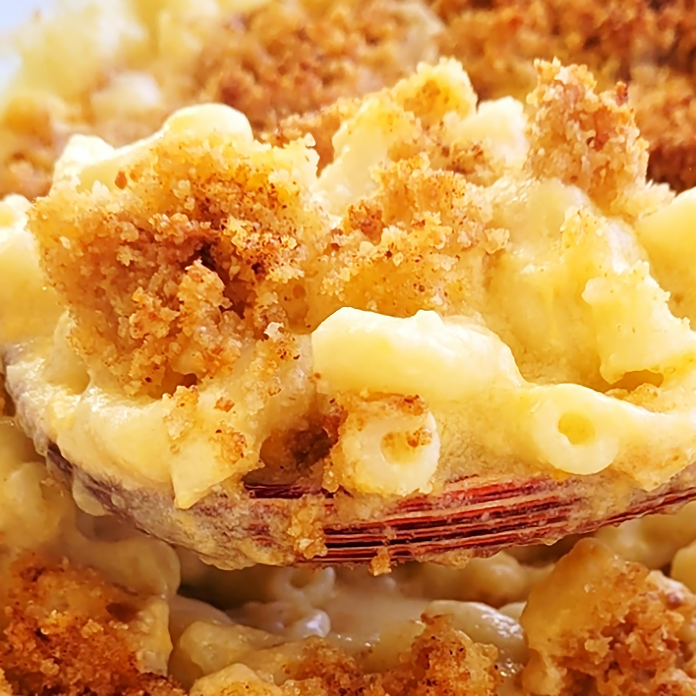

Macaroni and Cheese

Baked Mac and Cheese
A favorite amongst all, young and old, surely to make you a hit at the family gathering.
Ingredients
- 8 oz uncooked macaroni
- .25 cup butter
- 2.5 tblspoons all purpose flour
- 3 cups milk
- 2 cups shredded sharp cheddar
- .5 cup grated parmesan
- 2 tblspoons butter
- .5 cup bread crumbs
- 1 pinch paprika